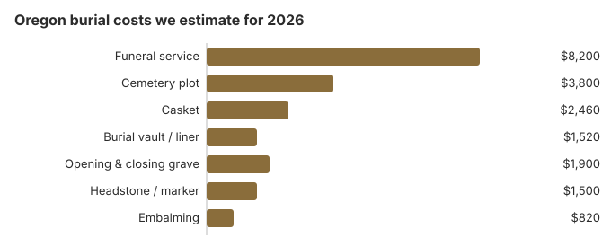
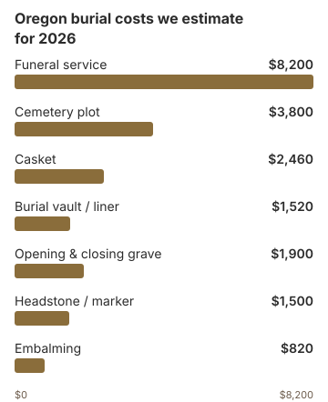

Burial Costs in Oregon (2026)
We estimate an Oregon burial at $18,380 to $22,880, cemetery charges included, built on an $8,200 funeral service and a $3,800 plot. Oregon is unusual in licensing every cemetery as well as every funeral home through one Mortuary and Cemetery Board. Below are the costs, the protections for a spouse's place in a family plot, the consent needed to move a grave, the state's $550 indigent program and Oregon's four national cemeteries.
Oregon Burial Costs, Item by Item
| Line | Oregon estimate | Range |
|---|---|---|
| Funeral service | $8,200 | $6,150 – $10,660 |
| Cemetery plot | $3,800 | $1,900 – $7,600 |
| Casket | $2,460 | $820 – $6,560 |
| Burial vault / liner | $1,520 | $800 – $10,000 |
| Opening & closing grave | $1,900 | $500 – $3,000 |
| Headstone / marker | $1,500 | $500 – $5,000+ |
| Embalming | $820 | $500 – $1,500 |
Where the Oregon figures come from: They start from the national medians in the NFDA 2023 General Price List Study, then adjust for Oregon regional costs and for inflation using the BLS funeral-expense price index. Use them to sketch an Oregon burial budget. They are not a survey of area providers and not a quote; ask for each provider's price list to get a firm figure. For the details, see our method and the disclaimer. Every state cremation rate quoted here, Oregon's included, is likewise our estimate, as set out on our methodology page.
State sources: ORS 97.570.


By our estimate, an Oregon burial, cemetery fees and all, costs $18,380 to $22,880, with the casket and headstone driving the spread.
Oregon Cemeteries May Allow Natural Burial
Saving on an Oregon Burial
How an Oregon family can spend less:
- Ask for itemized prices. An Oregon funeral home must give you its General Price List; get each cemetery's charges itemized too, rather than a package.
- Ask about burial without a vault. Since no Oregon statute requires one, a cemetery may accept a liner or a natural burial; ask what it allows.
- Use a family plot you already own. A spouse of the plot owner has a vested right to burial in a multi-space plot (ORS 97.570), so check the deed before buying a new space.
- Price cremation too. About 78% of Oregon deaths end in cremation by our estimate; a cremation quote beside the burial one shows what the plot and grave work add.
Burial in a Cremation State
With cremation the norm in Oregon, burial is the less common choice, but the rules for it are detailed. Each cemetery holds a certificate of authority from the Mortuary and Cemetery Board, which investigates complaints, and a body cannot be moved from a plot without the consents set out in ORS 97.220. A family that buys a multi-space plot should keep the deed, since it records who may be buried there. A spouse's right to a space in that plot cannot be taken away without the spouse's written consent, although a divorce ends it (ORS 97.580), so a family selling unused spaces should check who still holds a right to them.
Burial Resources
- Best Burial InsuranceCompare plans to cover burial expenses
- Headstone & Monument GuideCosts, types, and buying tips
- Green Burial OptionsEco-friendly and natural alternatives
- Best Online Casket RetailersCaskets bought online often cost less
- Funeral Consumers AllianceNonprofit consumer advocacy for funeral pricing
Compare Funeral Costs
- Cremation vs. Burial Cost ComparisonSide-by-side price comparison to help you decide
- Direct Cremation: Most Affordable OptionNFDA 2023 median $2,645 with a family-supplied container (latest available)
- Average Funeral Cost in 2026National cost breakdown with real prices
- How to Compare Funeral PricesStep-by-step guide to comparing funeral prices
- Funeral Cost BreakdownEvery line item explained: know what you're paying for
- Cheapest Funeral OptionsLower-cost alternatives, with typical price ranges
In Oregon, as elsewhere, the funeral home cannot refuse a casket bought from another seller. Prices for caskets and markers are in our online casket retailer guide and headstone cost guide, and help with the bill is in the payment assistance guide.
Who Must Agree Before an Oregon Grave Is Moved
Oregon sets out who has to agree before a body is moved from a cemetery plot. Removal needs the consent of the cemetery authority and the written consent of the person who holds the right to direct disposition of the remains. For buried cremated remains, that is the person who had them and arranged their interment (ORS 97.220; checked October 29, 2026). The Oregon Supreme Court has held that the written consent rule is mandatory, even where a cemetery's own rules would accept a verbal okay.
- If someone refuses: the county court of the county where the cemetery sits can give permission instead, after at least 60 days' notice to the cemetery and to the person who does not consent.
- Unpaid plots: if payment for a grave space is 90 or more days past due, the cemetery may move the remains to another plot or suitable place.
What Oregon Charges for a Death Certificate ($25)
Oregon cemeteries and most estate or insurance desks will ask for a certified death certificate before they will act. The Oregon Health Authority charges a nonrefundable $25 initial record-search fee that includes the first certificate, and $25 for each additional copy (Oregon Health Authority, vital records fees; checked November 12, 2026). If the date of death is not known, that $25 covers a five-year search: the year you give plus two years before and two years after. Mail and drop-box orders use those state fees. An online order adds a $7 expedite fee and a $15.50 VitalChek vendor and security fee.
- There is no discount for extras, so budget $25 for every certified copy you will need.
- If you are unsure of the year, remember that each additional five-year span is another $25 search.
- A mail or drop-box order avoids the online vendor fees if you can wait for regular processing.
Oregon's Burial Regulator and Public Help
The Oregon Mortuary and Cemetery Board licenses both funeral homes and cemeteries, so a license question or a complaint about either goes to the same board. A family may arrange a burial without a funeral director; the cemetery's rules still apply, and the burial permit must be in hand. Burial needs a disposition permit. Cremation has no fixed waiting period, though it also needs a medical certifier's or medical examiner's authorization and a disposition permit (ORS 432.158).
Indigent Disposition Program
The state reimburses $550 for an unclaimed body and expects the least costly lawful method, so a family that wants a chosen cemetery must claim the body and pay for the burial (ORS 97.170; Oregon Indigent Disposition Program guide). A spouse or child may claim Social Security's one-time $255 within two years; it is paid to them, not to the cemetery.
Oregon's National Cemeteries Include Willamette and Eagle Point
Oregon's national cemeteries are Willamette (503-273-5250), Eagle Point (541-826-2511), Fort Stevens (503-273-5250) and the Roseburg annex (541-677-3152). For a veteran who qualifies, VA charges nothing for the grave, its opening or the headstone (VA National Cemetery Administration).
Practical Next Steps on an Oregon Burial
- Get the General Price List and the cemetery's price sheet before agreeing to anything.
- Ask if a headstone bought elsewhere is allowed.
- To choose the cemetery, claim the body; the $550 program covers only an unclaimed body.
- For a veteran, have the DD214 discharge record ready when you call Willamette.
- Report a mispriced burial to the board at 971-673-1500.
A private Oregon burial plot is a family expense the VA does not replace in full, but an eligible veteran buried in Oregon can still receive a plot or interment allowance (up to $1,032 for deaths on or after October 1, 2026) plus a government headstone. See veteran plot and burial benefits for the distinction between that allowance and a free national-cemetery grave.
Frequently Asked Questions
What does an Oregon burial cost?
Our Oregon range is $18,380 to $22,880: an $8,200 funeral service, a $3,800 plot, a $1,520 vault, $1,900 for the grave's opening and closing, a $2,460 casket and a headstone from $500 to $5,000.
Does Oregon require a burial vault?
No Oregon statute requires a vault. Whether you need one is set by each Oregon cemetery's rules, and a cemetery that requires an outer container may accept a liner in place of a vault.
Oregon is unusual in licensing each cemetery. The Mortuary and Cemetery Board issues a certificate of authority to operate (ORS chapter 692), investigates complaints and can impose civil penalties of up to $1,000 per violation, although it cannot order a refund. If an Oregon cemetery's practice does not match its written rules, the Board is the place to report it.
What rights come with an Oregon family plot?
Oregon protects a spouse's place in a family plot. Under ORS 97.570, the spouse of a plot owner has a vested right to be interred in a plot with more than one space, and ORS 97.580 says that right cannot be removed without the spouse's written consent; a divorce ends it. Check a deed before selling unused spaces. On the funeral side, direct burial without embalming or a viewing is usually the cheapest choice, and a home may not charge a fee if you bring your own casket. Eligible Oregon veterans pay nothing for a VA national cemetery burial.
How do Oregon cemeteries compare on price?
Each Oregon cemetery sets its own fees, so compare at least two on the plot, opening and closing, container rule and endowment care charges. The Mortuary and Cemetery Board licenses them all and takes complaints at 971-673-1500. Its penalties are civil fines, not refunds, so get every price and promise from the cemetery in writing, and look up the cemetery's license on the board's website before you pay.
What is Oregon's total burial cost?
Line by line: service $8,200, plot $3,800, casket $2,460, vault $1,520, opening and closing $1,900 and headstone $500 to $5,000, for $18,380 to $22,880 before cash advance items.
Is natural burial an option in Oregon?
Ask each Oregon cemetery whether it accepts burial in a biodegradable container without embalming or a vault; some do, and our green burial guide lists the questions to raise.